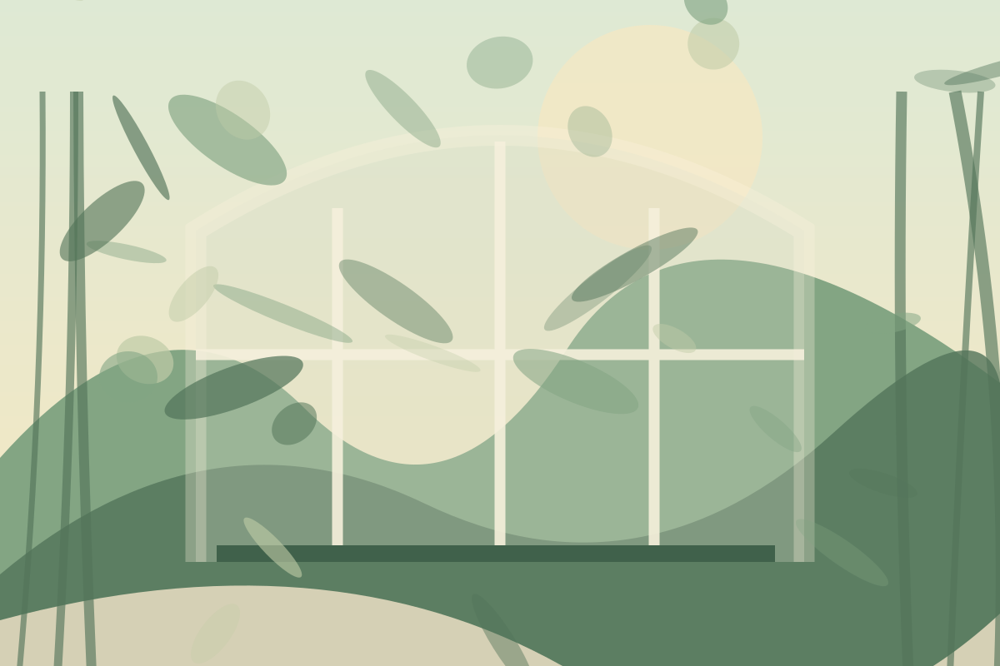
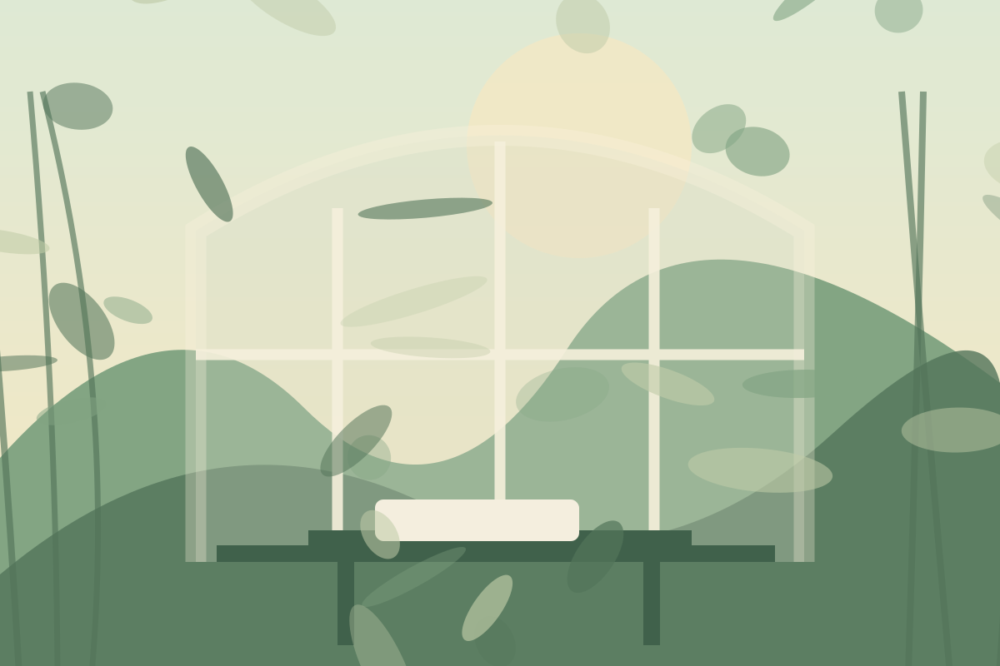
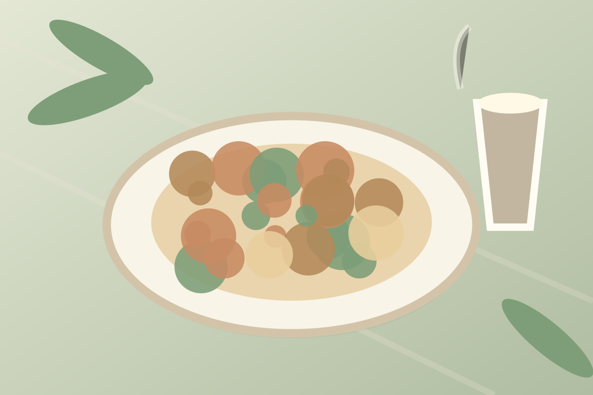

藏身在陽明山上的花園咖啡館，用大片玻璃窗、木作與綠色植栽，把山間最療癒的景色收藏在室內。找一個靠窗的座位，享受光影、咖啡與微風。
植物與玻璃屋的相遇，讓這裡充滿自然又神祕的氣氛。從窗邊向外望去，遠處的山景與近處的蕨葉交織，連一杯簡單的拿鐵都變得格外浪漫。




一份香氣飽滿的鹹食、一塊細緻的乳酪蛋糕，配上熱咖啡，就是恰到好處的森林下午茶。
餐點示意與文字僅供專題介紹；菜單以店家官方公告為準。